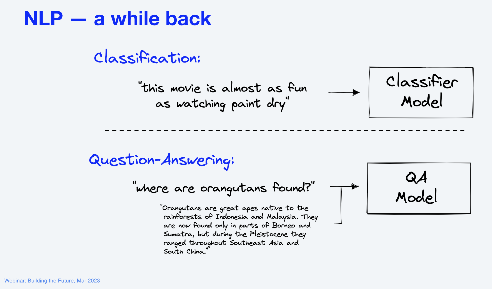

Week 9 計算語意
計算語意
一切都跟語意有關！（文本的表徵就是文本語意的表徵，結構是附加學習到的）
語意表徵 (在底層) 推動 NLP/AI 的發展: feature learning, architecture learning, objective learning, prompt engineering
NLP 極簡史

語言模型 (Language Model)
語言模型是一個函式，它可以計算一個句子的機率。
NLP 的發展幾乎可以歸納爲語言模型的訓練發展。（from n-gram statistical LMs to neural LMs）
機器學習
NLP 的發展與機器學習密不可分。
希望機器能從餵給它的資料中學到一個預測方法。數學上地說，就是學到一個函式。
機器學習概覽
機器學習的種類
按照所預測輸出的類型爲類別 (label) 或數值 (real-valued) 之不同，可分為分類 (classification) 、迴歸 (regression) 、生成式學習 (Generative Learning) 等。
按照學習的行爲可分
監督式學習 (Supervised/Predictive learning) ：給定標準答案，學輸入與輸出的映射 (mapping)。
非監督式學習 (Unsupervised/Descriptive learning) ：給定輸入，學輸入的模式分佈 (distribution)。
強化式學習 (Reinforcement learning) ：給定獎勵或懲罰，學如何行動或行為 (how to act ot behave)。
Parametric vs. Non-parametric
- Parametric model：參數化的模型，參數的數目是固定的，模型的複雜度是固定的。
- Non-parametric model：非參數化的模型，參數的數目是不固定的，隨着資料大小而不同。
生成式學習 (Generative Learning)
a.k.a. 結構化學習 (structured learning)
- 結構化學習是指輸出爲一個結構化的物件，如語音辨識、機器翻譯、語言模型等。
機器學習
選擇 (候選) 的函式集合
決定評測函式的方法 (e.g., loss function)
找最好的函式 (最佳化 optimization)
chatGPT (貌似) 將生成式學習解成分類問題。
例子
假設我們的任務是 Linear Regression
- 線性迴歸是一種迴歸模型，它假設輸入與輸出之間存在線性關係。
- 目標是找到一條線，使得所有點到該線的距離之和最小。
- 參數是線的斜率與截距。
- 損失函數是均方誤差 (Mean Squared Error, MSE)。
- 最佳化方法是梯度下降法 (Gradient Descent)。
深度學習
深度學習是一種機器學習方法，它使用多層神經網路來進行學習。參數是權重 (weight) 與偏差 (bias)。
深度學習的核心是反向傳播算法 (backpropagation)，它可以自動地計算損失函數對模型參數的梯度。
深度學習的損失函數是交叉熵 (cross-entropy)。
深度學習的最佳化方法是隨機梯度下降法 (stochastic gradient descent)。
涉及的數學知識：函數概念、統計與機率、微積分、線性代數（向量內積、矩陣運算）、多變數函數的微分（梯度下降）等。
我們先來複習一下需要的數學知識
回到語言表徵問題
Natural Language as (discrete) symbols or (continuous) signals?

- 表徵的方法： count-based and prediction-based methods
語言模型
- 統計式語言模型 (Statistical language model)
- n-gram 語言模型 (n-gram language model)
- 神經網路語言模型 (Neural network language model)
回到語意學習：先從字詞（語意）的表徵方法開始
詞的表徵方法：將一個詞用一個向量表徵，該向量的每個元素代表該詞的某種特徵 (不見得可以解讀出來)。
方法有很多種，例如：one-hot encoding、distributional semantics、word embeddings等。
獨熱表示法 | One-hot Encoding
- 用一個詞表大小的向量來表示一個詞，（假設詞表爲 \(V\)，其大小爲 \(|\mathbb{V}|\)），然後將該詞在詞表中的位置設爲 1，其餘位置設爲 0。
如此在該向量中，詞表裡第 \(i\) 個詞在第 \(i\) 維上被設爲 1，其餘維均爲 0。
- 問題：不同的詞的向量完全不同，因此無法用來表示詞的相似性（e.g., cosine similarity = 0）; 資料稀疏 (sparse) 時，無法充分學習詞的意義。
詞的分佈語意表徵 | distributional semantics
- 分佈假說 (distributional hypothesis)：詞彙意義是由它所出現的上下文分佈語境 (context) 決定的。
怎麼決定 operationalize 語境呢？window size?
兩種 Co-occurrence Matrix
- term-document matrix
- term-term matrix
問題：高頻詞誤導、higher-order 無法導出（A-B, B-C \(\rightarrow\) A-C）、一樣有資料稀疏性問題。
解法一：Pointwise Mutual Information (PMI)
想法：若一個詞和許多詞共現，則降低其權重；反之提高。
- Information theory 中有一個 PMI 剛好用來衡量兩個詞的共現機率與各自單獨出現的機率之比值。
解法二：tf-idf
tf-idf (term frequency-inverse document frequency)
想法：一般來說，詞 t 在文件 d 中出現的次數越多，該詞對於文件 d 的重要性越高；但是，如果詞 t 在語料庫 D 中出現的文件數量越多，則該詞對於語料庫 D 的重要性越低，因為該詞對於語料庫 D 的特徵性不強。
- 一種統計方法，用以評估一個詞對於一個文件集或一個語料庫中的其中一份文件的重要程度。
- \(tf(t,d)\): term frequency, 詞 t 在文件 d 中出現的次數。
- \(idf(t,D)\): inverse document frequency, 詞 t 在語料庫 D 中出現的文件數量的倒數。
- 取個平衡 \(tf-idf(t,d,D) = tf(t,d) \times idf(t,D)\)
解法三：奇異值分解 | Singular Value Decomposition (SVD)
一種矩陣分解方法，將一個共現矩陣 (\(M\)) 分解成三個矩陣的乘積。
- \(M = U \Sigma V^T\)， 其中 \(U\) 為一個 \(m \times m\) 的矩陣，\(\Sigma\) 為一個 \(m \times n\) 的矩陣，\(V\) 為一個 \(n \times n\) 的矩陣。
用於降維，例如：將一個 \(m \times n\) 的矩陣分解成三個 \(m \times k\) 的矩陣的乘積，其中 \(k\) 為一個較小的數字，這樣就可以將原本 \(m \times n\) 的矩陣降維到 \(m \times k\) 的矩陣。
課堂練習
詞嵌入表徵 | Word Embeddings
(distributed semantic representation)(word vectors)
- 用連續、低維、稠密 (dense) 的向量來表示。
- count-based and prediction-based methods
詞分佈語意是透過語料庫統計得到向量值，再經過 PMI、SVD 等變換，一旦確定無法修改調整。而詞嵌入中的向量值，是隨着目標函數的優化過程調出來的。（亦即，可以將詞向量值看成是模型的參數）。
進入文本（語意）表徵
詞袋假說 (bag-of-words)：假定文本中的字詞是沒有順序 (order)的集合，語境 (context) 不重要。
- 將文本中的全部詞所對應的向量表示加總起來，就是文本的向量表示。
- 可以是 one-hot encoding，distributional， 或 word embeddings。
cosine similarity
用深度學習學習表徵 (Representation Learning)
自動學習特徵 (features) 或表徵 (representations)。
從輸入 \(x\) ，利用多層神經網路學習多層次表徵 (\(h^{1}, h^{2}, h^{3}, ..\)) 以及最終的輸出 \(h^{4}\)。
這種學習表徵的方法被稱為 representation learning (對比於需要手工的 feature engineering)。
\(x\) 可以是 sound, pixels, words, etc. 深度學習在 speech, vision, language 上取得了很大的進展。
深度學習（類神經網路）
一種從人類神經網路汲取靈感而生的機器學習方法，透過多層次的非線性轉換，將輸入 \(x\) 轉換成輸出 \(y\)。
- 我們先從感知器 (perceptron) 開始，再到多層感知器 (multi-layer perceptron)。
(單層) 感知器 | (Single-layer) Perceptron
將樹突理解爲輸入，軸突理解爲輸出，神經元理解爲一個函數，將來自樹突輸入的電子訊號，和表示是否超過神經細胞內電位的閥值 (threshold) 作比較，超過則此細胞達激活狀態輸出 1，否則輸出 0。
感知器的輸出：\(y = f(\sum_{i=1}^{n} w_{i}x_{i} + b)\)，其中 \(f\) 為激活函數，\(w_{i}\) 為權重 (weight)，\(b\) 為偏差 (bias)。
- (connection) weights are coefficients that scale (amplify or minimize) the input signal to a give neuron in the network. The are the parameters of the model that we want to learn from the data.
- Biases are scalar values (constants) added to the input signal to ensure that at least a few nodes per layer are activated regardless of signal strength. They are also parameters of the model that are learned from the data.
激活函數 (activation function)：將輸入轉換成輸出的函數，例如：
sigmoid(0~1),tanh(-1~1),ReLU(0 以下則都是 0), etc.。- 例如：Sigmoid 函數：\(f(x) = \frac{1}{1 + e^{-x}}\)，將輸入轉換成 0~1 之間的輸出。

- 例如：Sigmoid 函數：\(f(x) = \frac{1}{1 + e^{-x}}\)，將輸入轉換成 0~1 之間的輸出。
單層感知器在數學上被證明和邏輯迴歸等價，但無法解決 XOR 問題。
XOR 問題
多層感知器 | Multi-layer Perceptron (MLP)
由於單層感知器被證明無法解決 XOR 問題，因此 McClelland 等人提出多層感知器 (MLP) ，俗稱類神經網路。
MLP 是一種前饋神經網絡 (feed-forward neural network)，包括一個輸入層、一個或多個隱藏層以及一個輸出層。每一層都是全連接的。
MLP 使用反向傳播演算法（backpropagation）進行訓練，基於梯度下降法 (gradient descent) 優化損失函數 (i.e, minimize the error on the output)。
藉由感知器的階層化，即可解決 XOR 問題。
前饋神經網絡（Feedforward Neural Network）是一種常用的類神經網路架構。基本特點是訊息僅在網絡中單向傳播，從輸入層經過一個或多個隱藏層到達輸出層。在前饋神經網絡中，不存在循環或反饋連接，即各神經元之間沒有迴路。
反向傳播演算法 | Backpropagation
Backpropagation learning
- 就是一種能夠快速計算 Gradient 的演算法，也就是如何快速的算出 ∂C/∂w 與 ∂C/∂b。
損失函數 | Loss Function
進入（監督式）機器學習，除了模型之外，還需要設計兩個重要的東西：
損失函數 (loss function)：衡量模型預測值與真實值之間的差異，例如：均方誤差 (mean squared error)、交叉熵 (cross-entropy)、負對數似然 (negative log-likelihood) 等。
優化器 (optimizer)：決定模型如何更新參數，例如：隨機梯度下降法 (stochastic gradient descent) 等。
損失函數的作用可視爲是將神經網路的訓練，變成求解最佳化問題 (optimization problem)：從各種參數組合中 (weights + biases) 找到最佳的一組，使得損失函數的值最小。
另外注意，在不同脈絡，也稱爲目標函數 (object function)、代價函數 (cost function)等。
損失函數 | Loss Function
均方誤差 (mean squared error)：\(L(y, \hat{y}) = \frac{1}{2}(y - \hat{y})^{2}\)
交叉熵 (cross-entropy)：\(L(y, \hat{y}) = -\sum_{i}y_{i}\log(\hat{y}_{i})\)
優化器 | Optimizer
- 隨機梯度下降法 (stochastic gradient descent)：\(w_{t+1} = w_{t} - \eta \nabla L(w_{t})\)，其中 \(\eta\) 為學習率 (learning rate)。
梯度下降法
梯度：表示一個函數在特定點的斜率或變化速率。在神經網路的脈絡中，梯度用於找到我們應該更新模型參數（例如，權重和偏置）的方向，以最小化損失函數。
想像一下，你站在山坡上，希望走到山谷的最低點。梯度在你當前的位置告訴你最陡峭下降的方向。通過沿著負梯度的方向移動，你可以更有效地到達山谷底部。
在數學上，函數的梯度是一個向量，由函數相對於每個變量的偏導數組成。梯度指向函數增加速率最大的方向，而負梯度指向函數減少速率最大的方向。
利用微分
- \(f'(x) = \lim_{h \to 0} \frac{f(x+h) - f(x)}{h}\)
Hyperparameters
- 超參數 (hyperparameters)：在訓練模型之前，還需要設定的系統參數，例如：學習率、迭代次數、隱藏層神經元個數、 Regularization 等。
整理一下
Core components of a neural network:
- parameters (weights and biases)
- activation functions
- loss functions
- optimizers (optimization algorithm)
- hyperparameters
因應不同的任務與神經網路架構而調整。如 activation function 會因為不同的架構而有不同的選擇。
- output layer for regression tasks: linear activation function
- output layer for binary classification tasks: sigmoid activation function
- output layer for multi-class classification tasks: softmax activation function with an
argmaxoperation to get the highest score of all the classes.
從此開展不同的神經網路類型
- RBMs
- Autoencoders
- Convolutional Neural Networks
- Recurrent Neural Networks
- Transformers
- Generative Adversarial Networks
- …….
Autoencoders
用來學習資料的壓縮表徵。
- Autoencoders are neural networks that learn to copy their inputs to their outputs.
- They work by compressing the input into a latent-space representation, and then reconstructing the output from this representation (which assumes to be more efficient).
- They are useful for dimensionality reduction, feature detection, and feature extraction.
和 MLP 的主要差別在於：Autoencoder 輸入層與輸出層的單位數量是一樣的。
Word2Vec
“Neural Language Model”-inspired models
之前的 word vector representation: long (dimension size = \(|V|\)) and sparse (大部分是 0)，而且無法處理 OOV (out-of-vocabulary) words。
word embeddings (with short and dense vectors) 的方法：skip-gram with negative sampling
被 Mikolov 在 2013 年提出，並包成一個 package (word2vec)。
Self-supervised Learning
- 鄰近詞就是好答案，對supervised learning 而言就不再需要人爲標記。
想法
- Treat the target word w and a neighboring context word c as positive examples.
- Randomly sample other words in the lexicon to get negative examples.
- Use logistic regression to train a classifier to distinguish those two cases.
- Use the learned weights as the embeddings.
Skip-Gram classifier
轉成分類問題：（cf. SLP-chap6）
假定目標詞是杏仁，語境則操作化成 \(\pm 2\) 個鄰近詞，例如 (杏仁,果醬), (杏仁,食蟻獸), … 等 \((w,c)\) pairs。我們要訓練一個分類器來判斷 \((w,c)\) 是正例還是負例。(或者說 assigns each pair a probability: \(P(+|w,c)\))
怎麼算 P 呢？用 embedding similarity 來計算：越接近目標詞的 embeddings 越有可能是正例。
用內積來計算 similarity \((c \cdot w)\)
用 sigmoid 函數來將內積轉成機率 \(P(+|w,c) = \sigma(c \cdot w) = \frac{1}{1+exp(-c,w)}\)
當訓練完成之後，Embedding 的向量即是從此網絡當中的隱藏層（Hidden Layer）所取出的權重（Weight）。